Computer Design
Custom computer architectures with their own custom ISA's built from gate‑logic.
Motivation
Why I built this
Computer 1
I had taught myself boolean algebra and had learnt from articles and videos online, how to build half and full adders and as well as what the basic components of a computer are (ALU, memory, instruction decoder). I knew I would eventually be learning through my classes basic computer architecture which would teach me the way computer design is done and what it looks like but I didn't like the idea of not learning and exploring this on my own first and solving the problems myself without any influence on modern design so I decided to throw myself into make a computer based on my ideas and the basic components I had learnt. This set me off to build my first computer which was an 8 bit computer with 4 bit values (not overly impressive) and a custom ISA that was turing complete.
Computer 2
I took another attempt at making a computer and took the lessons I learnt from my first computer to design a more capable 16 bit computer with a more diverse ISA and sturdier architecture.
Approach
How I built it
Computer 1
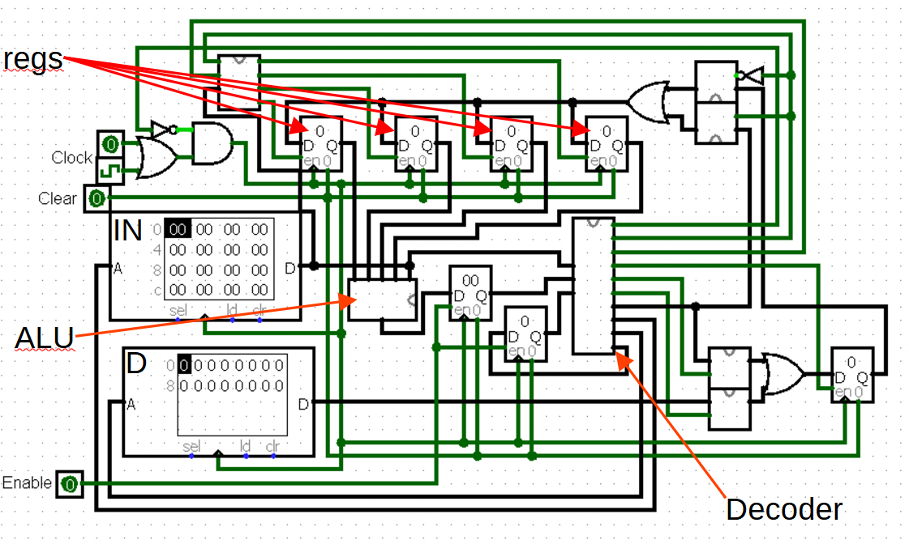
The computer has 4 registers, ALU, instruction decoder, and 2 memory blocks where the top block (labeled IN in the top left) is for 8-bit instructions and the bottom block if for 4-bit data (labeled D in the top left). Below is the ISA.
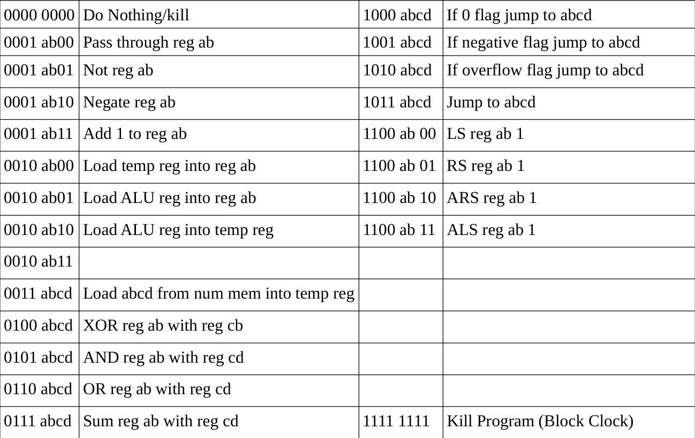
The letters indicate registers so ab could be 00 to 11 and the same for cd. Because of how many images I have of this computer all logic blocks can be seen below
View DesignsComputer 2
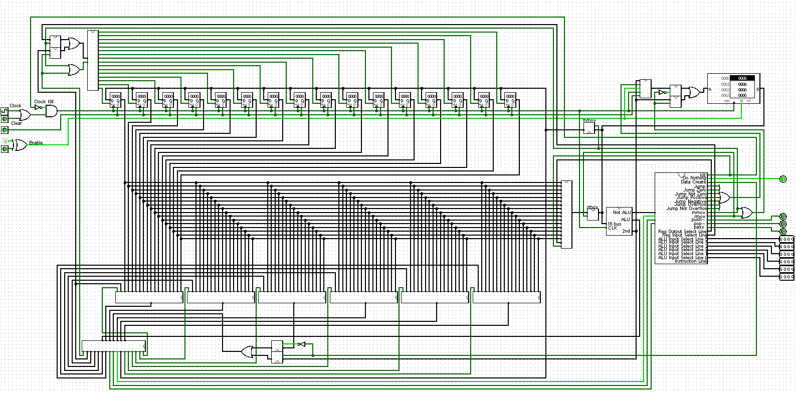
My second attempt of making a computer was a lot larger. It was a 16-bit computer with 16 registers, 1 memory block for both data and instructions, an ALU with more operations than my first computer, and a custom 16-bit ISA (shown below, the first image are the instructions and the second image is what each instruction does). Like my first computer the letters indicate the registers so abcd can be 0000 to 1111 and likewise for efgh. What made this ISA unique to the first is that I had some instructions use multiple 16-bit words. For example "cret reg# val" would be two lines of assembly, the first would be the instruction line with the corresponding register (ex. 0001 0000 0000 abcd) and the second would be a 16-bit word of data. I also added features to expand the computer to add a seprate stack block of memory but I am yet to implement it.
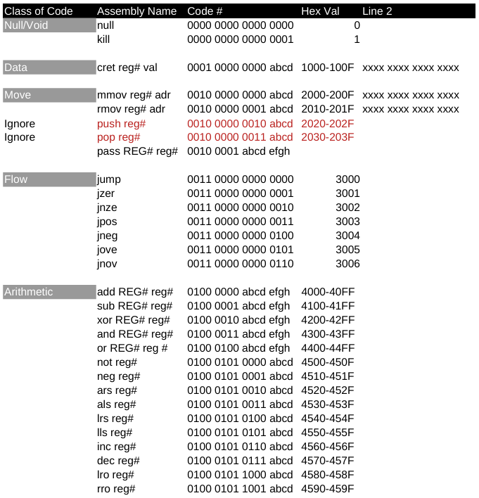
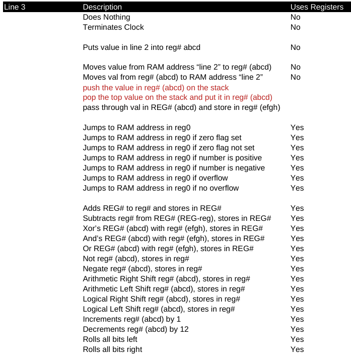
Some more designs for computer 2 can be seen below
View DesignsReflection
What I learned
There are a few major takeaways from these projects. The first is that I should have used a hardward description language to implement this stuff. It was good experience to have to design all the blocks myself but it became too much after a while, expecially with the 16 bit computer. I am now designing my computers in verilog. Another takeaway is that I should pipeline my data. I didn't know that data pipelining was even a thing when I started both these projects, I learnt about it later in one of my courses. If I were to implement these computers, I would not be able to run my clock nearly as fast with pipelining. I also would in the future use a standard ISA like RISC-V as there are already compilers out there for the language and it is known how to turn C or C++ into RISC-V.
Computer 1 Architecture
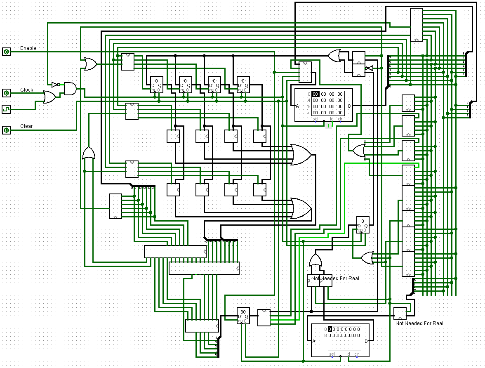
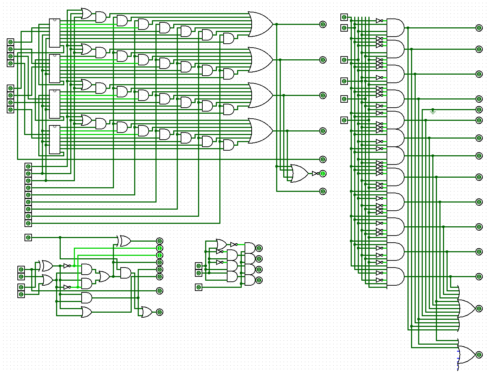
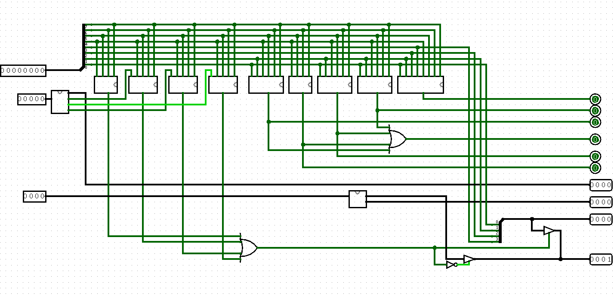
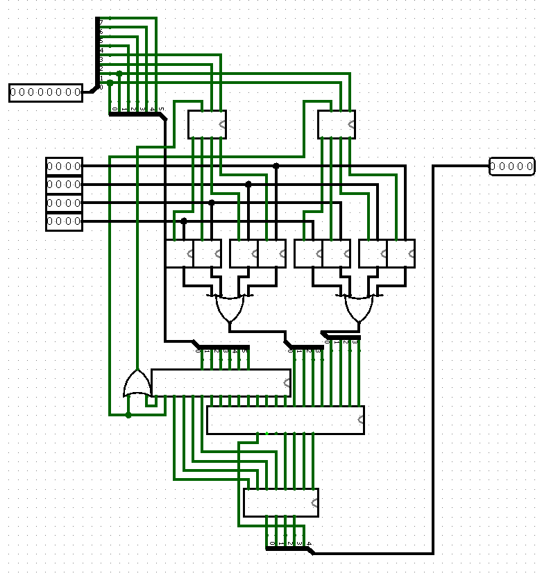
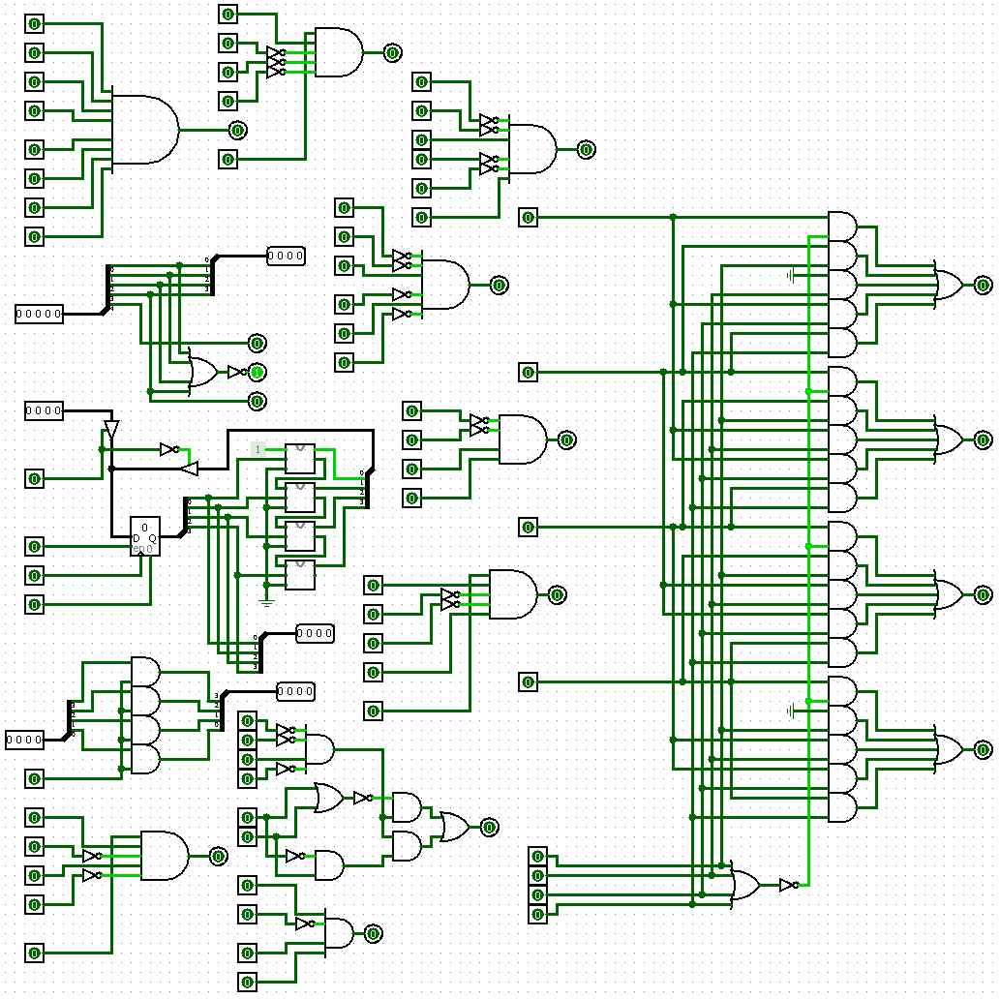
Computer 2 Architecture

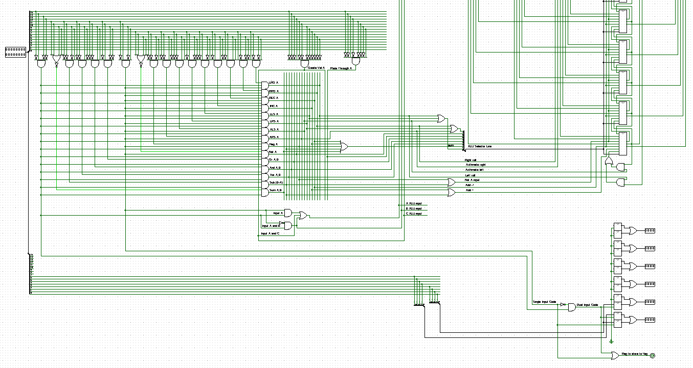
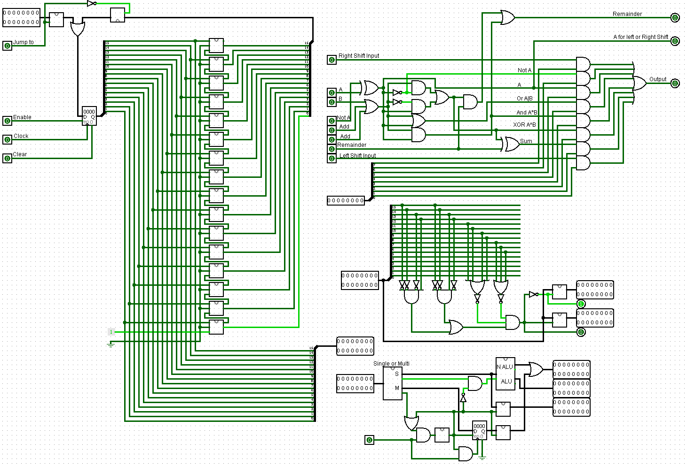